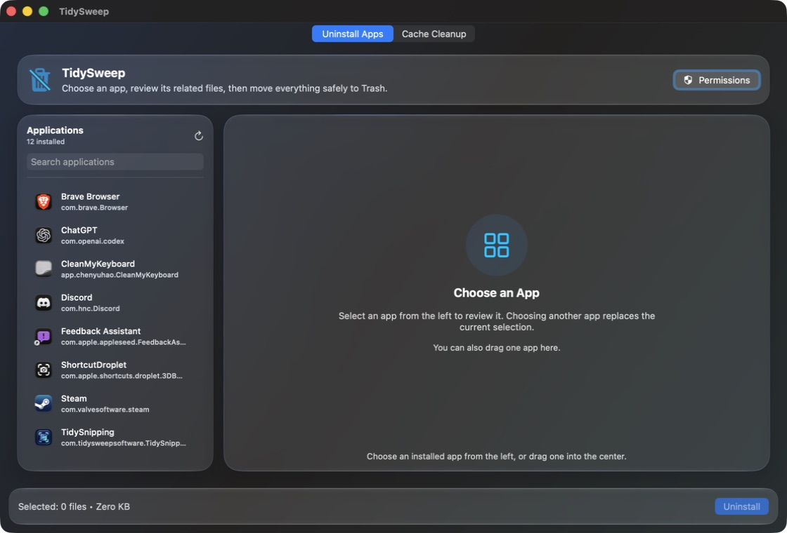
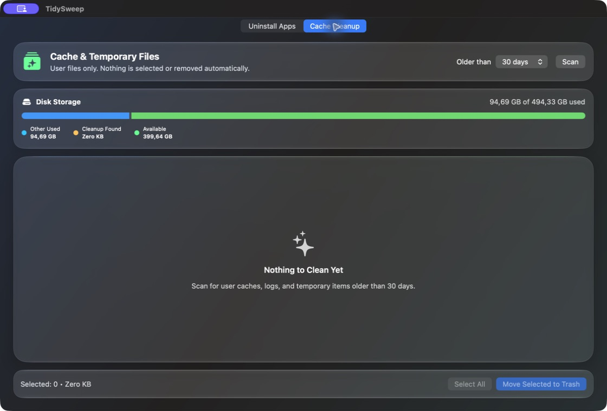
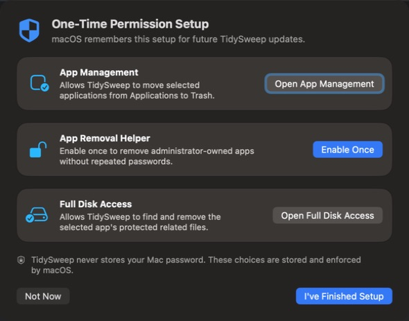

macOS 13 or later · Version 1.0.1
TidySweep for macOS
See what an app leaves behind before you remove it, then clean common caches through a calm, modern interface.
- Free
- No account
- Local processing
- Universal DMG
Clean with clarity and control
Review before removal
Choose an installed application and inspect its related files before taking action.
App uninstall queue
Select and review multiple apps while keeping the final removal under your control.
Cache cleanup
Scan common cache locations and review candidates before cleaning them.
Permission-aware
Clear status and guidance help you understand when macOS permission is needed.
See the app
Product screenshots
Real screens from TidySweep 1.0.1 for macOS.



Before you download
Current signing status: this build is ad-hoc signed and is not yet Apple-notarized. macOS may show a Gatekeeper warning on first launch. Follow the installation guide for the current safe opening steps.
SystemmacOS 13 or later
InternetNot required for core features
AccountNone required
PriceFree